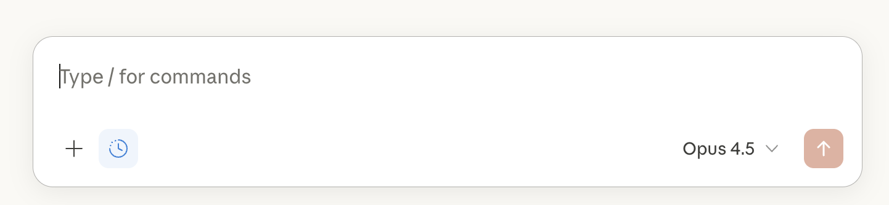

Claude: chat & Artifacts
Start with a conversation about a classroom barrier, then ask Claude to build a tool you can try beside the chat. Test it, change one thing and decide how to share it.
An optional extension to Automate → WebApp → Agents. Return to the same classroom barrier and compare what a different builder makes.
Best for
A small browser tool you can judge by using it. Same barrier, another builder.
Start here
Claude on the web or Claude Desktop. Start with chat; you do not need Claude Code for these exercises.
Hong Kong is not on Anthropic’s supported-locations list. Use this optional guide only where Claude is supported and your school permits it. The main workshop uses the regionally available tools in the workshop flow.
Based on official documentation checked on 6 November 2026. The classroom prompts below are suggested exercises, not results from a live Claude test. Controls may vary with your account and app layout.
Exercise 1: Start a useful conversation
Use this as a teacher-facing exercise. Claude’s getting-started guide requires users to be at least 18.
- Open Claude on the web, or use Claude Desktop, and sign in.
- Start a new chat. Describe one barrier from your sketch, without student names or identifying details.
- Send the message below. Read the questions it asks before requesting a build.
I teach Grade 7. Some students lose their place in a multi-step maths problem. I want a small tool that makes the current step clear. Ask me three questions about what students should see and do before you build anything.

A useful reply helps you decide what the learner sees first, how they move on and what a reset should do. Correct any assumptions before continuing.
Exercise 2: Build a small artifact
An artifact opens beside your conversation and gives you something to try. Ask for a custom artifact for a small interactive tool. You can return to it from the Artifacts tab. See the official Artifacts guide.
- Answer the clarifying questions from Exercise 1.
- Adapt the prompt below to your own barrier, then send it in the same conversation.
- Open the artifact and try its controls. If you receive only a description, ask Claude to build a working custom artifact.
Build a single-screen tool as a custom artifact for a Grade 7 student who loses their place in a multi-step maths problem. Show the current step first, then let them tick it off. Keep the language at Grade 5. No sign-in. Include a reset button and one invented example problem. Do not use student data, connected services or AI calls inside the tool.
If Artifacts is unavailable, check the file-creation capability in Settings or ask your workspace administrator. Claude’s documentation lists the required capability and plan settings.
For another route from the presentation, try: “Build a Turtle Art coding tool with sequence steps and repeat loops. Make the blocks easy to drag and drop on a mobile device.”
Exercise 3: Test without explaining
Use the same test as the workshop: swap devices, say nothing and watch where a colleague hesitates.
- First glance: can they tell what to do?
- Next step: does ticking a step reveal the right next action?
- Reset: does it return to a useful starting state?
- Readability: can they use it at the size of the device your students have?
Write one observation before asking for a change. “The tester tapped the heading because the next-step button was unclear” is more useful than “Make it better.”
The tester could not tell which step was active. Make the current step more obvious and give the next-step button a clear action label. Keep the task and language level the same. Explain what you changed so I can check it.
After the change, repeat the action that caused the hesitation. Check that reset still works.
Exercise 4: Change one thing
Choose one workshop move and compare the result with the previous version. These are practice requests you can adapt:
Replace the long instructions with one short instruction for the active step. Keep the same maths problem and steps.
Combine the progress indicator and the next-step control so the learner sees where they are and what to do in one place.
Remove everything that is not needed to understand and complete the current step. Keep reset available.
Let the teacher enter a new example problem. Keep the student screen simple and do not add accounts or shared storage.
Before a substantial change, use Duplicate in the artifact’s title menu so you can compare versions. Claude Academy’s custom-artifact tutorial explains this workflow.
Keep exploring
Compare this version with your Gemini or ChatGPT build. Which one made the learner’s next action clearest? Keep the useful idea, then go round the loop again.